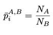
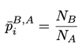
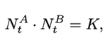
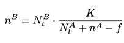

Miniswap 路线图 .
第一阶段 生态启动计划
我们通过生态初始化代币来启动 MiniSwap 并回报我们的社区。MiniSwap 生态系统代币总数为 10 亿枚 MINI 。其中，1.57 亿枚 MINI 将以私募形式发行。私募后用户可以通过社区奖励计划来获得代币。早期支持者奖励是为 MINI 生态的早期投资人所设。共有 30 轮兑换机会，用户可用 ETH 来兑换 MINI 代币。随着轮次的增加，MINI 的价格也不断增加。所以，支持者越早加入生态启动计划，可获得的奖励受益就越高。
资金池采用阶梯兑换算法：
第一轮私募，1ETH可兑换100901MINI，总量2018039枚。
第二轮私募，1ETH可兑换93838MINI，总量2815164枚。
第十轮私募，1ETH可兑换52510MINI，总量5776154枚。
以此类推...
Miniswap私募池
第二阶段 分布式的自动化交易平台 MiniSwap Genesis
MiniSwap Genesis 是基于以太坊的去中心化和自动交易平台。它利用了两个关键概念。第一个关键概念是流动性池，流动性提供者将代币添加到池中，交易者可以交换以太坊链上任何的一对代币。第二个关键概念是交易即挖矿模式，交易者的每笔交易都会获得 MiniSwap 提供的奖励。并且，对于每一笔交易所有的流动性提供者和 MINI 持有者还将获得额外社区奖励。
1、价格预言机
MiniSwap 将动态调整任何给定代币对的价格。设 pi 为时间 ti 时的价格。精确来说, 从时间点 ti 开始经过后 ∆t 时间后，使用代币 A ∈ T 来兑换 B 代币的购买价格 pi,∆t 为:

任何参与者都可以访问该预言机来估算价格，即某个时间段的平均价格。我们现在来分析用瞬时价格可能出现的问题。设 p¯A,Bi 为在时间点 ti 用代币A 购买一个单位代币 B 的瞬时价格（就是未使用累积权价格）。计算方法如下任何参与者都可以访问该预言机来估算价格，即某个时间段的平均价格。我们现在来分析用瞬时价格可能出现的问题。设 p¯A,Bi 为在时间点 ti 用代币A 购买一个单位代币 B 的瞬时价格（就是未使用累积权价格）。计算方法如下
 2、流动性池
MiniSwap 通过流动池为任意资产对提供流动性。对于任意一堆数字资产(A, B ∈ T )，MiniSwap 去中心化交易所的的储备金存储都遵照以下的线性关系。
其中 K 是预定义的常数。 流动性提供者根据线性关系，将自己的代币投入到流动池中，即对于每个要存入的代币 A，流动性提供者还需要根据定义的关系将一些代币 B 放入池中。交易者可以交换 MiniSwap 中可用的任何资产对。资产交换可以通过智能交易合约无缝完成并且没有确认延迟。设 nA 为交易者想要用于购买代币 B 的代币A 的数量，f 为交易所产生的交易手续费，交易者将获得 nB 个代币 B，如下列公式所述。
3、交易即挖矿 Transaction-Fee-Mining
Miniswap中的每笔交易被确认，就会有交易费2倍的MINI被挖出，其中50%由交易者获得；50%由流动性提供者获得。
Miniswap中所产生的的全部手续费，都将用于购买MINI。其中50%将分配给代币持有者；50%被直接销毁。

第三阶段 分布式金融系统 MiniSwap DeFi
MiniSwap Genesis上线后，我们将引入 MiniSwap DeFi 以支持各种去中心化金融产品。这将创建一个具有丰富功能的 MiniSwap 生态系统。
1、美式期权。
美式期权 ，简单来说就是用户在我们平台购买一定数量的期权权益（可理解为开仓），系统根据用户购买的方向和未来一段时间行情的走向，判定用户的盈利或亏损，并反馈给用户。期权种类（又称期权周期）就是期权的时间期限，我们平台开通的期权种类分为 1 分钟，3 分钟，5 分钟，15 分钟，30 分钟，1 小时，12 小时，24 小时。在期权到期之前，用户可以选择提前行权（平仓），也可以等待期权到期后，系统自动行权（平仓）。行权后的收益或亏损，以行权时的行情价和开仓价格来判断。 权利金 (premium) 就是当前购买 N 个期权，用户需要支付的 USDT 数额，即可以理解为开仓保证金数额；用户如果亏损，亏损的数额不会超过权利金的数量。权利金是根据期权价格和购买数量计算出来的。计算公式为：权利金 = 购买期权数量 * 期权价格（加价）。 保本价格（break-even price）顾名思义就是用户保全权利金的行情价。当行情价，沿着用户的购买方向（做多或做空）波动到保本价格时，用户才能保本，否则用户就会亏损。所以期权可以理解为，用户刚开仓时就是亏损的，必须行情价波动到保本价才能回本，行情继续沿着购买方向波动就会盈利。 美式期权作为金融合约，能够使买家在不迟于约定的时间以预先确定的价格购买或出售资产。预先确定的价格称为执行价格 (strike price, SP)，约定的时间称为期权周期。每个期权都有一个期权价格 (intrinsic value, IV)。期权价格是期权的执行价格和基础市场的现行价格 (current price, CP) 之间的差异。对于看涨期权，内在价值是通过从基础价格(underlying price) 中减去执行价格计算得出的。相反，看跌期权的内在价值是通过从执行价格中减去基础价格计算得出。
2、美式期权保险。
用户在开仓购买期权时，可以选择购买期权保险。期权保险可以在用户亏损时，给予用户赔付一定数量的资金。期权保险赔付，有特定的行情价格区间，并不是只要用户亏损就会赔付，并且保险赔付的数额为保证金的一部分，并不是全额赔付。比如说，用户开仓购买了 1 个 BTC 的 10 分钟做空期权，当前 BTC/USDT行情价为 5000，期权价格为 12 USDT，保本价格为 4988，权利金为 1 BTC *12 USDT =12USDT。用户开仓时，用户花 1 USDT 购买了最高赔付数额为 5usdt 的赔付保险，赔付区间为 4990-4995。 按上述条件计算，会有以下几种情况： – 当行情波动到 5000.9999，且用户行权平仓，那么用户亏损数额为 12 USDT。 – 当行情波动到 4988-5000 之间并行权，用户亏损数额为 12 USDT ＞亏损＞0 USDT。 – 当行情波动到 4990-4995 之间并行权，用户亏损但是用户会获得保险赔付，赔付数额为：5 USDT ＜赔付额＜ 0。 – 当行情波动为 4998 并行权，用户不亏不赚，用户收回 12 个 USDT 的成本投入。 – 当行情波动小于 4998 并行权，用户盈利，且盈利数额大于 0 个 USDT。以上举例为做空，做多的逻辑和做空相同，只不过方向和做空是反的，此处不赘述。
第四阶段 分布式金融系统生态网络 MiniSwap Global
在 MiniSwap DeFi 成熟后，我们将启动 MiniSwap Global ，使得 MiniSwap DeFi 可以在不同区块链生态系统之间进行通信。
这将使得 MiniSwap 成为去中心化，可共享和自动化的平台，用于交易不同区块链生态系统提供的各种各样的金融产品。
MiniSwap Global 还将建成生态系统网络，允许不同区块链平台无缝交易。我们初步计划采用类似 Cosmos 框架的设计和原子交换 [3] 协议。前者可以让交易者更快速的完成交易，后者可以使交易者完全不经过任何第三方来做完全的点到点的交易。